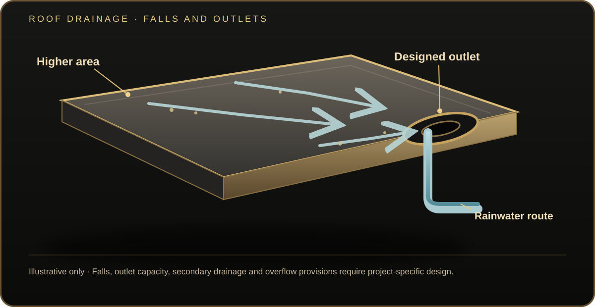
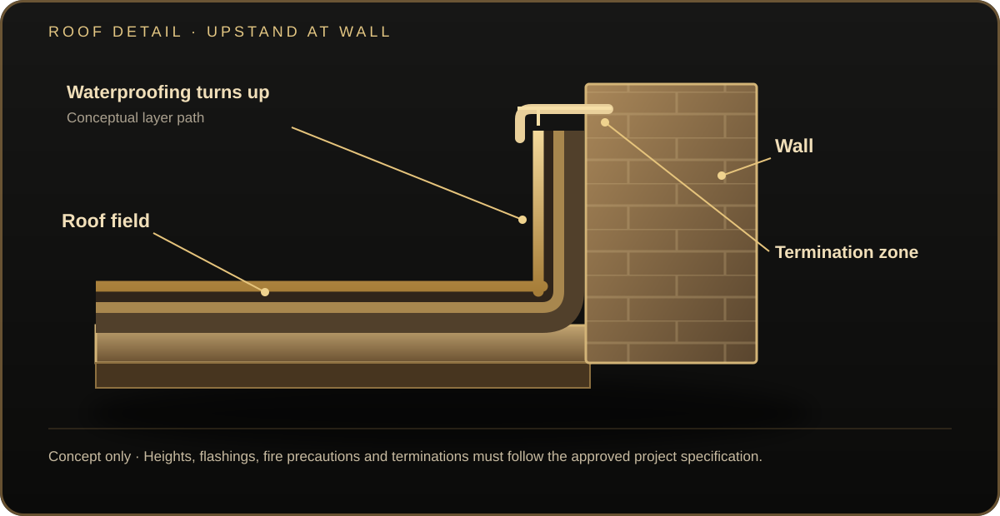

FREE LESSON 3 · BEGINNER
Drainage, Outlets & Roof Details
Explore how a flat roof manages water and why junctions and penetrations deserve special attention. These diagrams explain concepts, not construction dimensions or approved installation details.
What you'll learn
- Why flat roofs need designed falls and suitable outlets.
- How blocked outlets and standing water affect roof performance.
- What upstands, edges and penetrations are.
- What observations to record during a safe inspection.
1. Where does rainwater go?
A flat roof is not intended to be perfectly level. Its design should direct water towards appropriate outlets or gutters. The required falls, outlet capacity and overflow arrangements depend on the building design and applicable standards; do not assume one slope suits every roof.

2. Why outlets need attention
Leaves, debris and poorly maintained strainers can obstruct drainage. Prolonged ponding may indicate a blocked outlet, inadequate falls, structural movement or another design issue. Safe inspection records should note where water collects and whether an overflow route exists.
3. Upstands, edges and penetrations
Upstands are raised waterproofing transitions at walls, kerbs and other vertical surfaces. Roof edges, outlets, pipes, rooflights and equipment supports interrupt the main roof field and need compatible, designed detailing. A defect at a small junction can allow water beneath a much larger roof area.

4. Record observations, not guesses
A useful inspection note identifies the roof area, date, visible defect, location relative to an outlet or junction, and any interior evidence. Photos should be taken only from a safe position. A stain does not necessarily identify the entry point.
Further reading
Knowledge check
Does a flat roof need a designed route for rainwater?
Yes. Falls and outlets should be designed to manage water for the building.
What can cause standing water near an outlet?
Possible causes include debris, insufficient falls, movement or a design problem. Competent investigation is needed.
Why are roof penetrations important?
They interrupt the main waterproofing surface and need compatible, properly designed junction details.
Should you climb onto a roof to clear a blocked outlet without controls?
No. Arrange safe access and suitable fall-prevention measures with competent people.
Lesson complete
You have learned the key drainage and detailing concepts to discuss with a competent designer or roofing supervisor.
← Lesson 2Back to Academy